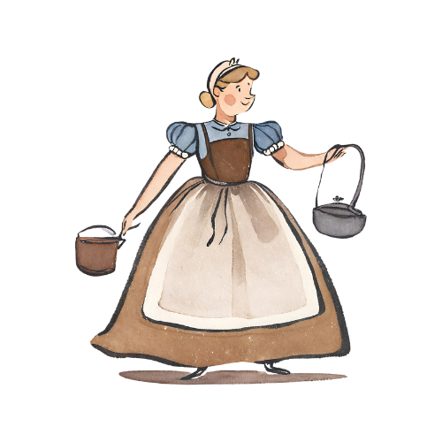
Once upon a time there was a beautiful girl named Cinderella.
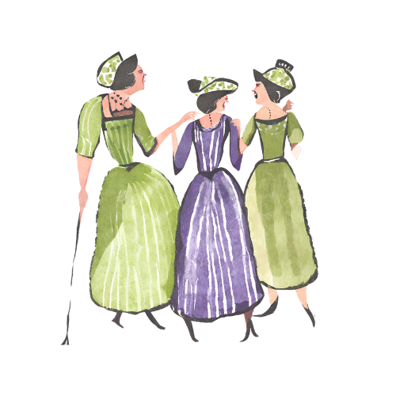
Cinderella lived with two ugly sisters and her wicked stepmother.
They were very unkind to Cinderella and made her do a lot of hard work.
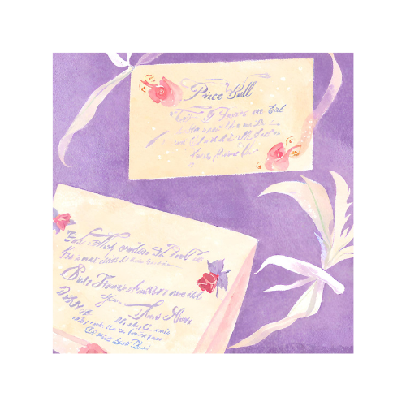
One day, an invitation came from the palace that invited everyone to the Prince's Ball.
Do you think Cinderella's stepmother will allow her to attend the Prince's Ball?

The day of the ball arrived and Cinderella was forbidden by her stepmother to attend the ball.
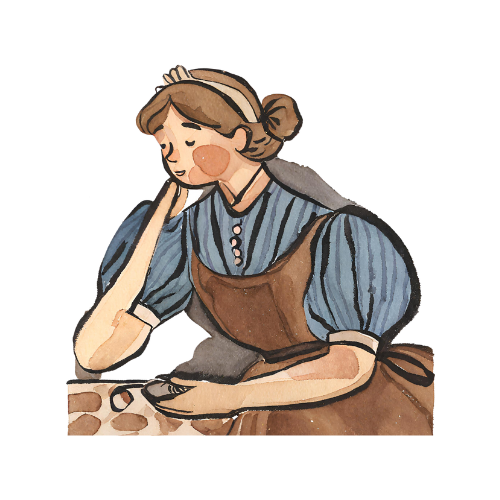
"I do wish I could go to the ball," she said.
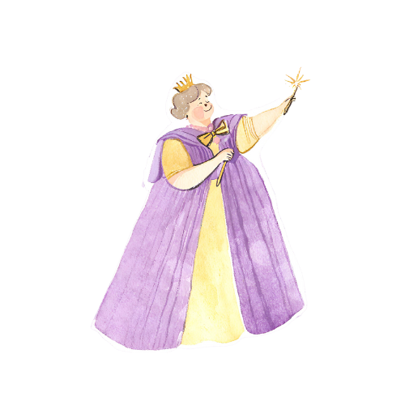
Just then, a lovely old lady with a gold wand in her hand appeared in the room.
"I am your fairly godmother and you shall go to the ball!" she said.
Cinderella's Fairy Godmother will ask her to gather three things. What do you think these objects are?
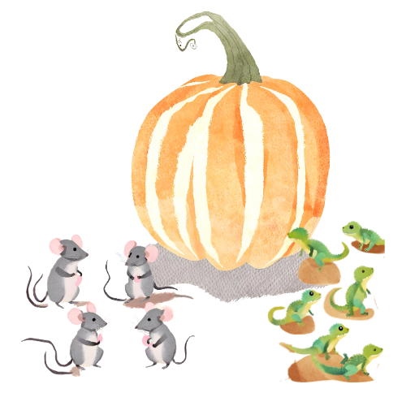
The fairy godmother asked Cinderella to find her a pumpkin six mice, and six lizards.
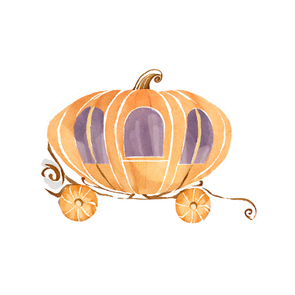
With the touch of her wand, the fairy godmother turned the pumpkin into a magnificent coach...
the mice into 6 magnificent horses...
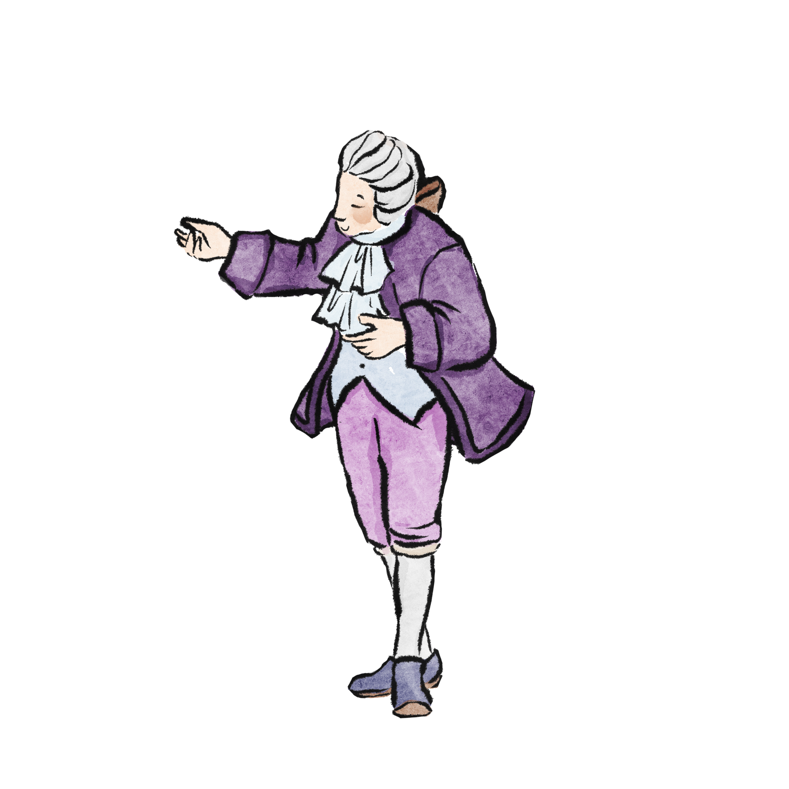
and the lizard into six footmen.
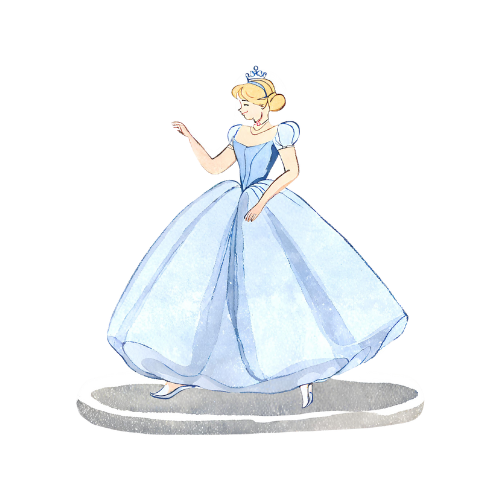
Then the fairy godmother touched Cinderella with her wand.
Cinderella's old dress turned into a beautiful gown and on her feet were the prettiest glass slippers.
In the 1950 film, the Fairy Godmother sang Bibbidi-Bobbidi-Boo as she transformed Cinderella. Click the sound icon to listen to the song.
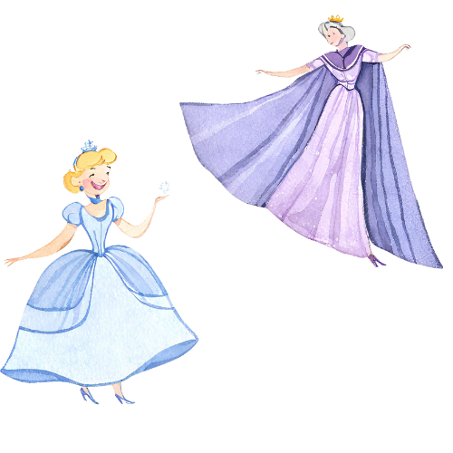
"Remember, you must leave the ball before the clock strikes twelve," said the fairy godmother.
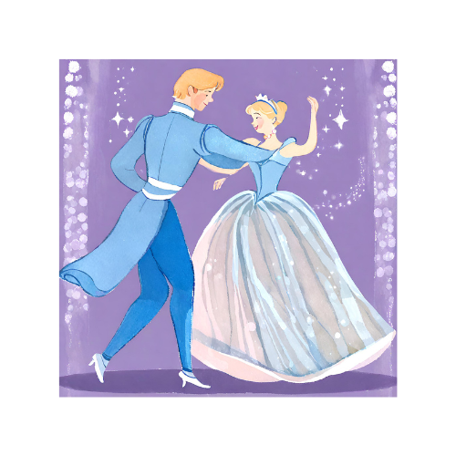
Cinderella arrived at the ball.
She looked so beautiful that everyone wondered who she was.
The prince asked Cinderella to dance and they danced together all night.

Cinderella was enjoying herself so much that she didn't notice the time.
Midnight approached and the clock began to strike...
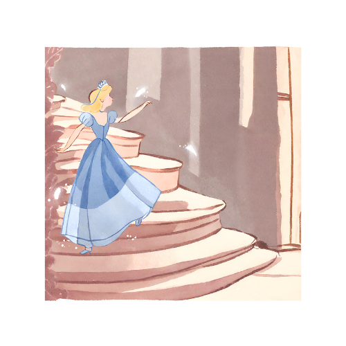
Cinderella ran out of the palace. As she ran down the stairs, one of her glass slippers fell off.
Do you think Prince Charming would catch Cinderella?
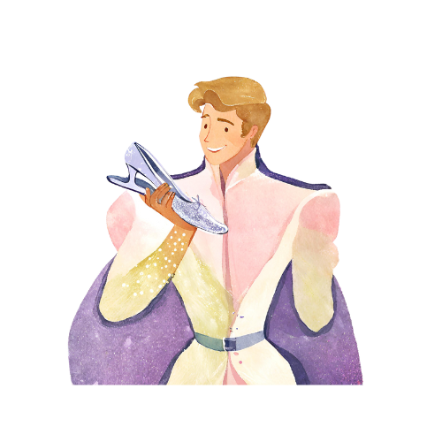
The prince ran after her but he was too late! However, he found her glass slipper on the steps.

The next morning, the prince went from house to house with the glass slipper.
At last the prince came to Cinderella's house.

The first ugly sister tried on the slipper, but her foot was too wide.

The second ugly sister tried on the slipper, but her foot was too long.

"Please may I try on the slipper?" asked Cinderella. The slipper fit perfectly!

The prince asked Cinderella to marry him. They both lived happily ever after.